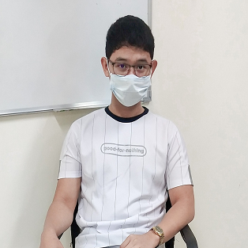

Serrakura Movie Booking Website
October 18,2020
Site Description
Serrakura Movie Booking Website is another movie booking site on the internet for you! Serrakura was originated at Manila, Philippines on October 18, 2021. It was created by three developers named Mr. Ruel Joseph Cruz, Mr. Ralph Jaren C. Villanueva, and Mr. Jasfer S. Senangelo. This movie booking site aims to provide a more efficient and more convenient movie ticket booking for people seeking to watch movies on cinema. This project was not the same as any other booking site but the developers believe that there's always a way to improve and satisfy what clients are looking for.
THE DEVELOPERS
JASFER S. SENANGELO
Bachelor of Science in Information Technology Major in Systems Development
Central Luzon State University
Mr. Jasfer Senangelo, 21 years old and one of the creators of the Serrakura Movie Booking Site and was born on November 01, 1999. Mr. Senangelo is currently staying at Zone 3, Brgy. Manicla, City of San Jose, Nueva Ecija. For inquiries, you can reach him through email at: senangelo.jasfer@clsu2.edu.ph jazsumalbag@gmail.com
THE DEVELOPERS

RUEL JOSEPH V. CRUZ
Bachelor of Science in Information Technology Major in Systems Development
Central Luzon State University
Mr. Ruel Joseph Cruz, 22 years old and one of the creators of the Serrakura Movie Booking Site and was born on September 15, 1999. Mr. Cruz is currently staying at Municipality of San Antonio, Nueva Ecjia. For inquiries, you can reach him through email at: cruz.rueljoseph@clsu2.edu.ph
THE DEVELOPERS
RALPH JAREN C. VILLANUEVA
Bachelor of Science in Information Technology Major in Systems Development
Central Luzon State University
Mr. Ralph Jaren Villanueva, 20 years old and one of the creators of the Serrakura Movie Booking Site and was born on December 13, 2000. Mr. Villanueva is currently staying at INC Compound Brgy. Tayabo, City of San Jose, Nueva Ecija. For inquiries, you can reach him through email at: villanueva.ralph@clsu2.edu.ph ralphjarenvillanueva@gmail.com